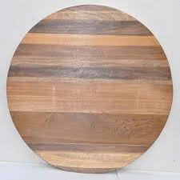

Simulation of Dining Philosophers Problem
A classical problem to demonstrate the programming of concurrent or parallel processes
Consider five philosophers seated around a circular table, who spend their lives just thinking and eating. The table has a plate of spaghetti. However, there are only five chopsticks available. Each philosopher thinks. When he gets hungry, he picks up the two chopsticks that are closest to him. If a philosopher can pick up both chopsticks, he eats for a while. After a philosopher finishes eating, he puts down the chopsticks and starts to think.


Thinking
Hungry
Eating
Philosopher 1
Philosopher 2
Philosopher 3
Philosopher 4
Philosopher 5
Random number generated : 0
Philosopher 1 - Thinking
Philosopher 2 - Thinking
Philosopher 3 - Thinking
Philosopher 4 - Thinking
Philosopher 5 - Thinking